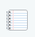

Chapter 3 Getting Started with R, RStudio, and knitr/R Markdown
If you have rarely or never used R before, the first section of this chapter gives you enough information to be able to get started and understand the R code I use throughout the book. For more detailed introductions on how to use R, please refer to the resources mentioned in Chapter 1 (Section 1.6). Experienced R users might want to skip the first section.
In the second section, I’ll give a brief overview of RStudio. I highlight the key features of the main RStudio panel (what appears when you open RStudio) and some of its main tools for reproducible research. Finally, I discuss the basics of the knitr and rmarkdown packages, how to use them in R, and how they are integrated into RStudio.
3.1 Using R: The Basics
To get you started with reproducible research, we’ll cover some very basic R syntax—the rules for talking to R. I cover key parts of the R language including:
objects and assignment,
component selection,
functions,
arguments,
the workspace and history,
packages.
Before discussing each of these in detail, let’s open R and look
around.28 When you open the R GUI program by clicking on the R icon,
you should get a window that looks something like Figure
3.1.29 This window is the R
console. Below the start-up information—information about
what version of R you are using, license details, and so on—you should
see a > (greater-than sign). This prompt is where you enter R
code.30 To run R code that you have typed after the prompt, press the
Return or Enter key.
Now that we have a new R session open, we can get started.
FIGURE 3.1: R Console at Startup
3.1.1 Objects
If you’ve read a description of the R language before, you will probably have seen it referred to as an ‘object-oriented language’. What are objects? Objects are like the R language’s nouns. They are things, like a vector of numbers, a data set, a word, a table of results from some analysis, and so on. Saying that R is object-oriented means that R is focused on doing actions to objects. We will talk about the actions, functions, later in this section.31 Now let’s create a few objects.
Numeric and string objects
Objects can have a number of different types. Let’s make two simple objects. The first is a numeric-type object. The other is a character object.
We can choose almost any name we want for our objects as long as it begins with an alphabetic character and does not contain spaces.32 Just because there are relatively few hard restrictions on object names, doesn’t mean that you should name your object anything. Your code will be much easier to read if object names are short and meaningful. Give each object a unique name to avoid confusion and conflicts. For example, if you reuse an object name in an R session, you could easily accidentally overwrite it.
Let’s begin working with numeric objects by creating a new object called
number with the number 10 in it.
Use the assignment operator33
(<-) to put something into the object:
To see the contents of our object, type its name into the R console.
## [1] 10Let’s briefly breakdown this output. 10 is clearly the contents of
number. The double hash (##) is included here to tell
you that this is output rather than R code.34 If you run functions
in your R console, you will not get the double hash in your output.
Finally, [1] gives the position in the object that the number 10 is on. Our object only
has one position.
Creating an object with words and other characters, a character object, is
very similar. The only difference is that you enclose the character
string (letters in a word for example) inside of single or double
quotation marks ('', or "").35 Let’s create an object called words
containing the character string Hello World:
An object’s type is important to keep in mind. It determines what we can do to the object. For example, you cannot take the mean of a character object like the words object:
## Warning in mean.default(words): argument is not
## numeric or logical: returning NA## [1] NATrying to find the mean of our words object gives us a
warning message and returns the value NA: not applicable. You can also
think of NA as meaning “missing”. To find out an object’s type, use the class()
function.36 For example:
## [1] "character"Vector and data frame objects
So far, we have only looked at objects with a single number or character string.37 Clearly we often want to use objects that have many strings and numbers. In R these are usually data frame-type objects and are roughly equivalent to the data structures you would be familiar with from using a program such as Microsoft Excel. We will be using data frames extensively throughout the book. Before looking at data frames it is useful to first look at the simpler objects that make up data frames. These are called vectors. Vectors are R’s “workhorse” (Matloff 2011). Knowing how to use vectors will be especially helpful when you clean up raw data in Chapter 7 and make tables in Chapter 9.38
Vectors
Vectors are the “fundamental data type” in R (Matloff 2011). They are an ordered group of numbers, character strings, and so on.39 It may be useful to think of most data in R as composed of vectors. For example, data frames are basically collections of vectors of the same length, i.e. they have the same number of rows, attached together to form columns.
Let’s create a simple numeric vector containing the numbers 2.8, 2, and
14.8. To do this, we will use the c() (combine)
function and separate the numbers with commas (,):
## [1] 2.8 2.0 14.8Vectors of character strings are created in a similar way. The only difference is that each character string is enclosed in quotation marks like this:
character_vector <- c("Albania", "Botswana", "Cambodia")
# Show character_vector's contents
character_vector## [1] "Albania" "Botswana" "Cambodia"Matrices
To give you a preview of what we are going to do when we start working
with real data sets, let’s combine the two vectors
numeric_vector and character_vector into a new
object with the cbind() function. This function binds the two vectors
together side-by-side as columns.40
## character_vector numeric_vector
## [1,] "Albania" "2.8"
## [2,] "Botswana" "2"
## [3,] "Cambodia" "14.8"By binding these two objects together, we’ve created a new matrix object.41 You can see that the numbers in the numeric_vector column are between quotation marks. Matrices, like vectors, can only have one data type, so R has converted the numbers to strings.
Data frames
If we want to have an object with rows and columns and allow the columns
to contain data with different types, we need to use data frames. Let’s
use the data.frame function to combine the numeric_vector
and character_vector objects.
## character_vector numeric_vector
## 1 Albania 2.8
## 2 Botswana 2.0
## 3 Cambodia 14.8In this output, you can see the data frame’s names attribute.42 It is the column names. You can use the names() function to see any data frame’s names:43
## [1] "character_vector" "numeric_vector"You will also notice that the first column of the data set has no name
and is a series of numbers. This is the row.names attribute. Data frame
rows can be given any name as long as each row name is unique. We can
use the row.names() function to set the row names from a vector. For
example,
# Reassign row.names
row.names(string_num_df) <- c("First", "Second", "Third")
# Display new row.names
row.names(string_num_df)## [1] "First" "Second" "Third"You can see in this example how row.names() can also be used
to print the row names.44 The row.names attribute does not behave
like a regular data frame column. You cannot, for example, include it as
a variable in a regression. You can use the row.names() function to
assign the row.names values to a regular column.
You will notice in the output for string_num_df that the strings in
the character_vector column are not in quotation marks. This does
not mean that they are now numeric data. To prove this, try to
find the mean of character_vector by running it through the mean()
function:
## Warning in
## mean.default(string_num_df$character_vector): argument
## is not numeric or logical: returning NA## [1] NAComponent selection
The last bit of code we just saw will probably be confusing. Why do we have a dollar sign ($) between the name of our data frame object name and the character_vector variable? The dollar sign is called the component selector. It’s also sometimes called the element name operator. Either way, it extracts a part, component, of an object. In the previous example, it extracted the character_vector column from the string_num_df so that it could be fed to
the mean() function.
We can use the component selector to create new objects with parts of other objects. Imagine that we have string_num_df and want an object with only the information in the numeric_vector column. Let’s use the following code:
# Extract a numeric vector from string_num_df
numeric_extract <- string_num_df$numeric_vector
numeric_extract## [1] 2.8 2.0 14.8Knowing how to use the component selector will be especially useful when we discuss making tables for presentation documents in Chapter 9.
attach() and with()
Using the component selector can create long repetitive code if you want
to select many components. You have to write the object name, a dollar
sign, and the component name every time you want to select a component.
You can streamline your code by using functions such as attach() and
with().
attach() attaches a database to R’s search path.45 R will
then search the database for variables you specify. You don’t need to
use the component selector to tell R again to look in a particular data
frame after you have attached it. For example, let’s attach the cars
data that comes with R. It has two variables, speed and
dist.46
## [1] 4 4 7 7 8 9## [1] 2 10 4 22 16 10We used the head() function to see just the first few values of each
variable.
Now that we are done working with the cars data set, we should detach() it. Not doing so could confuse R later in our session.
A safer alternative to attach() is with(). It more clearly delineates when to draw from inside a particular object. For example, we can find the mean of numeric_vector with() the string_num_df data frame:
## [1] 6.533In the with() call the data frame object goes first
and then the mean() function47 goes second in curly brackets ({}).
In this book I avoid using the attach() and with()
functions. Instead, I use the component selector. Though it creates longer
code, I find that code written with the component selector is less ambiguous.
It’s always clear which object we are selecting a component
from.
Subscripts
Another way to select parts of an object is to use subscripts. You have
already seen subscripts in the output from our examples so far. They are
denoted with square braces ([]). We can use subscripts to select not
only columns from data frames but also rows and individual values. As we
began to see in some of the previous output, each part of a data frame
has an address captured by its row and column number. We can tell R to
find a part of an object by putting the row number/name, column
number/name, or both in square braces. The first part denotes the rows
and separated by a comma (,) are the columns.
To give you an idea of how this works, let’s use the cars
data set again. Use head() to get a sense of what this data looks like.
## speed dist
## 1 4 2
## 2 4 10
## 3 7 4
## 4 7 22
## 5 8 16
## 6 9 10We can see a data frame with information on various car speeds (speed) and stopping distances (dist). If we want to select only the third through seventh rows, we can use the following subscript function call:
## speed dist
## 3 7 4
## 4 7 22
## 5 8 16
## 6 9 10
## 7 10 18The colon (:) creates a sequence of whole numbers from 3 to 7. To
select the fourth row of the dist column, we can type:
## [1] 22An equivalent way to do this is:
## [1] 22Finally, we can even include a vector of column names to select:
## speed dist
## 4 7 223.1.2 Functions
If objects are the nouns of the R language, functions
are the verbs. They do things to objects. Let’s use the mean function
as an example. This function takes the mean of a numeric vector object.
Remember our numeric_vector object from before:
## [1] 2.8 2.0 14.8To find the mean of this object, type:
## [1] 6.533We use the assignment operator to place a function’s output into an object. For example:
Notice that we typed the function’s name then enclosed the object name in
parentheses immediately afterwards. This is the basic syntax that all
functions use, i.e. FUNCTION(ARGUMENTS). Even if you don’t want to explicitly
include an argument, you still need to type the parentheses after the function.48
Arguments
Arguments modify what functions do. In our most recent example, we gave
the mean function one argument (x = numeric_vector) telling it that we
wanted to find the mean of numeric_vector. Arguments use the
ARGUMENT_LABEL = VALUE syntax.49 In this case, x is the argument
label.
To find all of the arguments that a function can accept, look at the
Arguments section of the function’s help
file. To access the help file, type: ?FUNCTION. For example:
The help file will also tell you the default values that the arguments are set to. You do not need to explicitly set an argument if you want to use its default value.
You do need to be fairly precise with the syntax for your argument’s
values. Values for logical arguments must be written as TRUE or
FALSE.50 Arguments that accept character strings require quotation
marks.
Let’s see how to use multiple arguments with the round() function. This
function rounds a vector of numbers. We can use the digits argument to
specify how many decimal places we want the numbers rounded to. To round
the object numeric_vector_mean to one decimal place, type:
## [1] 6.5Note that arguments are always separated by commas.
Some arguments do not need to be explicitly labeled. For example, we could write:
## [1] 6.533R will do its best to figure out what you want and will only give up when it can’t. This will generate an error message. However, to avoid any misunderstandings between yourself and R, it is good practice to label your argument values. This will also make your code easier for other people to read, i.e. it will be more reproducible.
You can stack functions inside of arguments. For example, have R find the mean of numeric_vector and round it to one decimal place:
## [1] 6.5Stacking functions inside of each other can create code that is
difficult to read. Another option that potentially makes more easily
understandable code is piping using the pipe function (%>%) that you
can access from the magrittr (Bache and Wickham 2022) or dplyr (Wickham et al. 2023) packages. The basic idea behind the pipe function is that the output of one function is set as the first argument of the next. For example, to find the mean of numeric_vector and then round it to one decimal place use:
##
## Attaching package: 'magrittr'## The following object is masked from 'package:rstan':
##
## extract# Find mean of numeric_vector and round to 1 decimal place
mean(numeric_vector) %>%
round(digits = 1)## [1] 6.53.1.3 The workspace and history
All of the objects you create become part of your workspace,
alternatively known as the current working environment. Use the ls()
function to list all of the objects in your current workspace.51
## [1] "character_vector" "number"
## [3] "numeric_extract" "numeric_vector"
## [5] "numeric_vector_mean" "pkg_to_install"
## [7] "si" "string_num_df"
## [9] "string_num_matrix" "words"You can remove specific objects from the workspace using the rm()
function. For example, to remove the objects character_vector and words
type:
To save the entire workspace into a binary, not plain-text, RData file use
save.image(). The main argument of
save.image() is the location and name of the file in which you want to
save the workspace. If you don’t specify the file path it will be saved
into your current working directory (see Chapter 4
for information on files paths and working directories). To
save the current workspace in a file called workspace-2019-12-22.RData in
the current working directory type:
Use load() to load a saved workspace back into R:
You should generally avoid having R automatically save your workspace when you quit and reload it when you start R again. Instead, when you return to a project, rerun the source code files. This avoids any complications caused when you use an object in your workspace that is left over from running an older version of the source code.52 In general, I also recommend against saving data in binary RData formatted files. They are not text files. They are not human readable. They are much less future-proof.
One of the few times when saving your workspace is useful is when
it includes an object that was computationally difficult and took a long
time to create. In this case, you can save only the large object with
save().53
For example, if we have a very large
object called model-output, we can save it to a file called model-output.RData like
this:
3.1.4 R history
When you execute code in the R console, it becomes part of your history. Use the history() function to see
the most recent functions in your history, You can also use the up and down arrows on your keyboard when your cursor is in the R console to scroll through your history.
3.1.5 Global R options
In R you can set global options with options(). This lets
you set how R runs and outputs functions through an entire R session. For
example, to have output rounded to one decimal place, set the digits
argument:
3.1.6 Installing new packages and loading functions
Functions are stored in R packages. The functions we have used so far were
loaded automatically by default. One of the great things about R is the
many user-created packages54 that expand the number of
functions we can use. To install functions that do not come with the basic
R installation, you need to install the add-on packages that
contain them. To do this, use the install.packages() function. By default, this function downloads and installs the packages from the Comprehensive R Archive Network (CRAN).
When you install a package, you will likely be given a list of “mirrors” from which you can download the package. Select the mirror closest to you.
Once you have installed a package, you need to load when you want to
use its functions. Use the library() function
to load a package.55 For example,
the following code loads the popular ggplot2 plotting package:
Please note that for the examples in this book I only specify what package a function is from if it is not loaded by default when you start an R session.
Finally, if you want to make sure R uses a function from a specific
package, you can use the double-colon operator (::). For example, to
make sure that we use the qplot() function from the ggplot2 package, we
type:
Using the double-colon ensures
that R will use the function from the particular package you want and
makes it clear to a source code reader what package a function comes
from. If you use the double-colon, you don’t need to
include library() beforehand. Note that it does not load all of the functions in the package, just the one you ask for.
3.2 Using RStudio
As I mentioned in Chapter 1, RStudio is an integrated development environment for R. It provides a centralized and well-organized place to do almost anything you want to do with R. As we will see later in this chapter, it is especially well integrated with literate programming tools for reproducible research. Right now, let’s take a quick tour of the basic RStudio window.
The default window
When you first open RStudio, you should see a default window that looks like Figure 3.2. In this figure, you see three window panes. The large one on the left is the Console/Terminal/Jobs pane. The Console pane is an R console and functions exactly the same as the console discussed so far in this chapter. Terminal is a command-line terminal where you can run command-line tools like those we discuss in Chapter 4. The Jobs pane allows you to run R scripts in the background. This is very useful if you have computationally time consuming jobs that you would like to run while also doing other work in RStudio.
The Environment/History/Connections panes are in the upper right-hand corner. The Environment pane shows you all of the objects in your workspace and some of their characteristics, like how many observations a data frame has. You can click on an object in this pane to see a preview of its contents. This is especially useful for quickly looking at a data set in much the same way that you can visually scan a Microsoft Excel spreadsheet. The History pane records all of the functions you have run. It also allows you to rerun code and insert it into a source code file. The Connections pane allows you to manage connections to databases such as an SQL server.
FIGURE 3.2: RStudio at Startup
In the lower right-hand corner, you will see the Files/Plots/Packages/ Help/Viewer panes. We will discuss the Files pane in more detail in Chapter 4. Basically, it allows you to navigate and organize your files. The Plots pane is where figures you create in R appear. This pane allows you to see all of the figures you have created in a session using the right and left arrow icons. It also lets you copy and save the figures in a variety of formats. The Packages pane shows the packages you have installed, allows you to load individual packages by clicking on the dialog box next to them, access their help files (just click on the package name), update the packages, and even install new packages. The Help pane shows you help files. You can search for help files and search within help files using this pane. Finally, the Viewer pane allows you to view local web content like JavaScript graphics and Shiny apps.
The Source pane
There is an important pane that does not show up when you open RStudio for the first time. This is the Source pane. The Source pane is where you create, edit, and run your source code files. It also functions as an editor for your markup files. It is the center of reproducible research in RStudio.
Let’s first look at how to use the Source pane with regular R files. We will then cover how it works with knitr/rmarkdown in more detail in the next section.
R source code files have the file extension .R. When you create a new
source code document, RStudio will open a new Source pane. Do this by
going to the menu bar and clicking on File New. In the New
drop-down menu, you have the option to create a variety of different
source code documents. Select the R Script option. You should now see
a new pane with a bar across the top that looks like
Figure 3.3. To run the R code, you have in your source code
file highlight it56 and click the Run icon on the top bar. This
sends the code to the console where it is run. The icon to the right of
Run runs the code above where you have highlighted. The
Source icon next to this runs all of the code in the file using R’s
source() function. When you click on the last icon on the right (it has a series of stacked lines) you will get a navigable table of contents for your file; very useful for working
with longer documents, especially markup documents.
FIGURE 3.3: RStudio Source Code Pane Top Bar
3.3 Using knitr and R Markdown: The Basics
To get started with knitr and R Markdown in R or RStudio, we need to learn some of the basic concepts and syntax. The concepts are the same regardless of the markup language we are knitting R code with, but much of the syntax varies by markup language. rmarkdown relies on knitr and a utility called Pandoc to create many different types of presentation documents (HTML, PDF, or MS Word) from one document written largely using knitr’s R Markdown syntax.
3.3.1 What knitr does
Let’s take a quick, abstract look at what the knitr package does. As I’ve mentioned, knitr ties together your presentation of results with the creation of those results. The knitr process takes three steps (see Figure 3.4). First, we create a knittable markup document. This contains both the analysis code and the presentation document’s markup which is the text and rules for how to format the text. knitr then knits: i.e. it runs the analysis code and converts the output into the markup language you are using according to the rules that you tell it to use. It inserts the marked up results into a document that only contains markup for the presentation document. You compile this markup document as you would if you hadn’t used knitr into your final PDF document or webpage presenting your results.
FIGURE 3.4: Knitr/R Markdown Process
3.3.2 What rmarkdown does
The rmarkdown package implements a variation on this process that utilizes a program called Pandoc to create presentation documents in multiple formats from a knittable document written in Markdown. The main difference between pure knitr markdown and rmarkdown documents is the inclusion of a header specifying how you want to render the document with Pandoc.57
The header is written in YAML.58 The YAML header can include
information such as the document’s title, author, whether or not to
include a table of contents, and a link to a BibTeX bibliography file.
YAML is a straightforward data format that organizes information in a
simple hierarchy. The header begins and ends with three dashes (---).
Information keys–like “title” and “author”–are separated from their
associated “values” by a colon (:). Sub-values of a hierarchy are
denoted by being placed on a new line and indented.59 Here is a basic
R Markdown header that indicates the document’s title, author, and date,
and that it will be turned into a PDF document (via LaTeX).
---
title: "A Basic PDF Presentation Document"
author: "Christopher Gandrud"
date: "2019-12-28"
output: pdf_document:
toc: true
—--The title, author, and date will be placed at the beginning of the
output document. The final line (toc: true) creates a table of
contents near the beginning of the PDF document when we knit it. We will
discuss more header options in Chapter 12.
RStudio can automatically create a basic header for the type of output
document that you want when you open a new R Markdown file. Simply
select File then R Markdown…. A window will appear that looks like
Figure 3.5. In this window select the type of output document
you want to create and click Ok.
In addition to the header, R Markdown differs from basic knitr files in that you can include Pandoc syntax in your R Markdown document. This can be useful for bibliographies as we will discuss in Chapter 12. Nonetheless, remember that apart from the header and ability to include Pandoc syntax, at the simplest level R Markdown documents are knitr documents written in R Markdown syntax. They have the same code chunk syntax, as we will see shortly.
FIGURE 3.5: The New R Markdown Options Window
3.3.3 File extensions
When you save a knittable file, use a file extension that indicates (a)
that it is knittable and (b) what markup language it is using. You can
use a number of file extensions for R Markdown files including: .Rmd
and .Rmarkdown.60 LaTeX documents that include knitr
code chunks are generally called R Sweave files and have the file
extension .Rnw. This terminology is a little confusing.61 It is a
holdover from knitr’s main literate programming
predecessor Sweave. Note that rmarkdown documents can compile to
LaTeX PDF documents and support pretty much the full capabilities of LaTeX.
Because markdown is generally easier to write than raw LaTeX, .Rnw markup
is much less commonly used. For example, I converted the third edition of this book
from .Rnw to .Rmd.
3.3.4 Code chunks
Use code chunks to include knittable R code into your markup presentation documents. Code chunk syntax differs depending on the markup language we are using to write our documents. Let’s see the syntax for R Markdown and R LaTeX files. If you are unfamiliar with basic LaTeX or Markdown syntax, you might want to skim Chapters 11 and 12 to familiarize yourself with it before reading this section.
R Markdown
In R Markdown files, we begin a code chunk by writing the head:
```{r}. A code chunk is closed, ended, with: ```. For example:
```{r}
# Example of an R Markdown code chunk
string_num_matrix <- cbind(character_vector, numeric_vector)
```The R Markdown code chunk syntax is exactly the same for markdown files you compile with knitr or rmarkdown.
R LaTeX (.Rnw)
Code chunks are delimited in non-R Markdown R LaTeX
documents in a way that emulates the long-established
Sweave syntax. Sweave-style code chunks begin with the following head:
<<>>=. The code chunk is closed with an at sign (@).
Code chunk labels
Each chunk has a label. When a code chunk creates a plot or the output
is cached, stored for future use, knitr uses the chunk
label for the new file’s name. If you do not explicitly give the chunk a
label it will be assigned one like: unnamed-chunk-1.
To explicitly assign chunk labels in R Markdown documents, place the
label name inside of the braces after the r. If we wanted to use the, admittedly not descriptive, label ex-label we type:
The same general format applies to the two types of LaTeX chunks. In
Sweave-style chunks, we type: <<ex-label>>=.
Try not to use spaces or periods in your
label names. Also remember that chunk labels must be unique.
Code chunk options
There are many times when we want to change how our code chunks are knitted and presented. Maybe we only want to show the code and not the results. Perhaps we don’t want to show the code at all but just a figure that it produces. Maybe we want the figure to be formatted on a page in a certain way. To make these changes and many others, we can specify code chunk options.
Like chunk labels, you specify options in the chunk head. Place them
after the chunk label, separated by a comma. Chunk options are written
following pretty much the same rules as regular R function arguments.
They have a similar OPTION_LABEL=VALUE structure as arguments. The
option values must be written in the same way that argument values are.
Character strings need to be inside of quotation marks. The logical
TRUE and FALSE operators cannot be written "true" and
"false". For example, imagine we have a Markdown code chunk called
ex-label. If we want to run the code chunk, but
not show the code in the final presentation document, we can use the
option echo=FALSE.
Note that all labels and code chunk options must be on the same line. Options are separated by commas. The syntax for knitr options is the same regardless of the markup language.
Throughout this book, we will look at a number of different code chunk options. Many of the chunk options we will use in this book are listed in Table ??. For the full list of knitr options, see the knitr chunk options page maintained by knitr’s creator Yihui Xie: http://yihui.name/knitr/options.
3.3.5 Global chunk options
So far, we have only looked at how to set local options in
knitr code chunks, i.e. options for only one specific
chunk. If we want an option to apply to all of the chunks in our
document, we can set global chunk options. Options are ‘global’ in the
sense that they apply to the entire document. Setting global chunk
options helps us create documents that are formatted consistently
without having to repetitively specify the same option every time we
create a new code chunk. For example, rather than using the fig.align='center' option in each code chunk that creates a figure, we can center align all figures in a document by setting the option globally.
To set a global option, first create a new code chunk at the beginning
of your document.62 You will probably want to set the option include=FALSE so that knitr doesn’t include the code in your presentation
document. Inside the code chunk, use opts_chunk$set. You can set any chunk option as an argument to opts_chunk$set. The option will be applied across your document, unless you set a different local option.
Here is an example of how you can center align all of the figures in R Markdown in a chunk placed near the beginning of the document:
```{r set-global, include=FALSE}
# Center align all knitr generated figures
knitr::opts_chunk$set(fig.align='center')
```If you want to use opts_chunk in a document rendered with
rmarkdown, you will need to either explicitly call it as in the example using the double colon or load the knitr package before calling it.
3.3.6 knitr package options
knitr package options affect how the package itself runs.
For example, the progress option can be set as either TRUE or FALSE 63 depending on whether or not you want a progress bar to be displayed when you knit a
code chunk. You can use base.dir to set the directory where you want all of your
figures to be saved (see Chapter 4).
You set package options in a similar way as global chunk options with opts_knitr$set.
For example, include this code at the beginning of a document to turn
off the progress bar when it is knitted:
3.3.7 Hooks
You can also set hooks. Hooks come in two types: chunk hooks and output hooks. Chunk hooks run a function before or after a code chunk. Output hooks change how the raw output is formatted. I don’t cover hooks in much detail in this book. For more information on hooks, please see Yihui Xie’s webpage: http://yihui.name/knitr/hooks.
3.3.8 knitr, R Markdown, and RStudio
RStudio is highly integrated with knitr/R Markdown and the markup languages that they work with. RStudio is probably the easiest tool for creating and compiling knitr/R Markdown. Most of the RStudio/knitr/R Markdown features are accessed in the Source pane. The Source pane’s appearance and capabilities change depending on the type of file you have open in it. RStudio uses a file’s extension and, if it is an rmarkdown document, its header, to determine what type of file you have open.64 We have already seen some of the features the Source pane has for R source code files. Let’s now look at how to use knitr and rmarkdown with R source code files as well as the markup formats we cover in this book: R Markdown and R LaTeX.
Compiling R source code Notebooks
If you want a quick, well-formatted account of the code that you ran and the results that you got you can use RStudio’s “Compile Notebook” capabilities. RStudio uses rmarkdown to create a standalone file presenting your source code and results. It will include all of the code from an R source file as well as the output. This can be useful for quickly presenting the steps you took to do an analysis. You can see an example RStudio Notebook in Figure 3.6.
If you want to create a Notebook from an open R source code file
click the Compile Notebook icon
() in the
Source pane’s top bar.65 Then in the window that pops up select the
output type you would like (HTML, PDF or MS Word) and click the
Compile button. For this example I selected HTML. In Figure
3.6 you can see near the top center right a small globe
icon next to the word “Publish”. Clicking this allows you to publish
your Notebook to RPubs (http://www.rpubs.com/). RPubs is a site for
sharing your Notebooks over the internet. You can publish not only
Notebooks, but also any R Markdown
document you compile in RStudio.
FIGURE 3.6: RStudio Notebook Example
In this chapter’s appendix we discuss interactive Jupyter notebooks. They are popular in the data science and tech industries and use a somewhat different logic from R Markdown notebooks.
My current tech team tends to use either Jupyter notebooks or R Markdown Notebooks to present our detailed analyses. We host and share these via GitHub. GitHub compiles both document types nicely for online access. For R Markdown Notebooks, use output: github_document in the header to ensure that the output file is compiled properly on GitHub.
FIGURE 3.7: RStudio Source Pane for an RMarkdown File
R Markdown
Figure 3.7 is what the Source pane looks like when you have an R Markdown file open. You’ll notice
the familiar Run button for running R code. It now includes a drop-down menu for running code chunks. It includes options like Run Current Chunk, i.e. run the chunk
where your cursor is located, Run Next Chunk, and Run All chunks. In this menu, you can select Insert Chunk to insert the basic syntax required for a code chunk. You can navigate to a specific chunk using a drop-down menu on the bottom
left-hand side of the Source pane. This can be very
useful if you are working with a long document. To knit your file, click
the Knit icon on the left side of the Source pane’s top bar.
If you click on the downward
arrow on the right of this icon, you will be given the opportunity to knit the document to HTML, PDF, or, MS Word using rmarkdown.
Helpfully, the R Markdown Source pane’s top bar also includes the ABC spell check icon.
RStudio can properly highlight both the markup language syntax and the R code in the Source pane. This makes your source code much easier to read and navigate. RStudio can also fold code chunks. This makes navigating through long documents, with long code chunks, much easier. At line 1014 in Figure 3.7, you can see a small downward facing arrow. If you were to click this arrow, the code chunk would collapse to look like line 1021 in Figure 3.7. To unfold the chunk, just click on the arrow again.
You may also notice that there is a code folding arrow on line 1015 in Figure 3.7. This allows us to fold parts of the code chunk. To enable this option, create a comment line with at least one hash before the comment text and at least four after it like this:
You will be able to fold all of the text after this comment up until the next similarly formatted comment (or the end of the chunk).
R (Sweave) LaTeX
Many of the Source pane options for R (.Rnw) LaTeX files are the same as R Markdown
files, the key differences being that there is a Compile PDF icon instead of
Knit. Clicking this icon knits the file and creates a PDF file in
your R LaTeX file’s directory. There is also a Format icon instead of
the question mark icon. This actually inserts LaTeX formatting functions
into your document for things such as section headings and bullet lists.
These functions can be very tedious to type out by hand otherwise.
By default, RStudio may be set up to use Sweave for compiling LaTeX
documents. To use knitr instead of Sweave to knit
.Rnw files you should click on Tools in the RStudio menu bar, then
click on Global Options.... Once the
Options window opens, click on the
Sweave button. Select knitr from the drop-down menu for “Weave Rnw
files using:”. Finally, click Apply.66
In the Sweave options menu, you can also set which LaTeX typesetting
engine to use. By default, it is set to the more established engine
pdfLaTeX. Another option is XeLaTeX. XeLaTeX has the ability to use many more characters than pdfLaTeX as it works with UTF-8 encoded input. It can also use any font on your computer. XeLaTeX is especially useful
compared to pdfLaTeX if you are using characters that are not found in
standard English.
3.3.9 knitr and R
As knitr is a regular R package, you can of course, knit
documents in R (or using the console in RStudio). All of the
knitr syntax in your markup document is the same as
before, but instead of clicking a Compile PDF or knit HTML button, use the knit() function. To knit a
hypothetical Markdown file example.Rmd you first use the
setwd() function to set the working directory (for more details see
Chapter 4) to the folder where the
example.Rmd file is located. In this example, it is
located in the Documents folder.67
Then you knit() the file:
You use the same steps for all other knittable document types. Note that if you do not specify the output file, knitr will determine what the file name and extension should be. In this example it would come up with the same name and location as we gave it.
In this example, using the knit() function only creates a Markdown file
and not an HTML file, as clicking Knit in RStudio did. Likewise, if you use
on a .Rnw file you will only end up with a basic LaTeX .tex file and not a
compiled PDF. To convert the Markdown file into HTML, you need to further
run the .md file through the markdownToHTML()
function from the markdown package, i.e.:
This is a bit tedious. Luckily, there is a function in the
knitr package that combines markdownToHTML() and knit().
It is called knit2html(). You use it like this:
If we want to compile a .tex file in R, we run it through the texi2pdf() function from the
tools package. This package will run both LaTeX and
BibTeX to create a PDF with a bibliography. See Chapter 11
for more details on using BibTeX for bibliographies. Here is a texi2pdf() example:
Just like with knit2html(), you can simplify this process by using the
knit2pdf() function to compile a PDF file from a .Rnw document.
3.3.10 R Markdown and R
Just as knitr is an R package that you can run from the console, you
can also run rmarkdown from the console. Instead of the knit(),
function use render(). Imagine that example.Rmd now has an rmarkdown
header:
---
title: "A Basic PDF Presentation Document"
author: "Christopher Gandrud"
date: "2018-10-28"
output:
pdf_document:
toc: true
html_document:
toc: false
—--This header specifies how the file can be compiled to either PDF or
HTML. When compiled to PDF, it will include a table of contents. When
compiled to HTML, it won’t. Now we use render():
This call will compile the document to a PDF in the working directory, because PDF is listed as the first output format in the header. The document will be called example.pdf. Alternatively, to compile the R Markdown file to HTML use:
We could compile to both formats using:
or
In all of these cases, render() will create, but not keep the intermediate .md or
.tex document. You can have these documents saved by adding keep_md
or keep_tex to the header. For example:
Finally, if you want to output to one format with the default rendering
style, for example, the HTML document, use html_document: default.
Chapter summary
We’ve covered a lot of ground in this chapter, including R basics, how to use RStudio, and knitr/R Markdown syntax for multiple markup languages. These tools, especially R and knitr/R Markdown, are fundamental to the reproducible research process we will learn in this book. They enable us to create dynamic text-based files that record our research steps in detail. In the next chapter, we will look at how to organize files created with these types of tools into reproducible research projects.
References
Please see Chapter 1 for instructions on how to install R.↩︎
This figure and almost all screenshots in this book were taken on a computer using the macOS 10.14 operating system.↩︎
If you are using a Unix-like system such as Linux Ubuntu or macOS, you can also access R via an application called the Terminal. If you have installed R on your computer, you can type
Rinto the Terminal. This will begin a new R session. You will know you are in a new R session because the same type of start-up information as in Figure 3.1 will be printed in your Terminal.↩︎Functions are also objects. In this chapter, I treat them as distinct from other object types to avoid confusion.↩︎
Wickham (2014a) argues that underscores (
_) should be used to separate words in object names to make the names easier to read. For example:health_datarather thanhealthdata. The underscore object naming convention appears to now be the dominant style in the R community. There are other conventions. These include using periods (.) or capital letters (referred to as CamelBack) to separate words. For more information on R naming conventions, see Bååth (2012).↩︎The assignment operator is sometimes also referred to as the ‘gets arrow’.↩︎
The double hash is generated automatically by knitr. Prepending the output with hashes makes it easier to copy and paste code into R from a document created by knitr/rmarkdown because R will ignore everything after a hash.↩︎
Single and double quotation marks are interchangeable in R for this purpose. In this book I always use double quotes, except for knitr code chunk options.↩︎
R object types are not fixed. They can be implicitly converted by assigning values of a different type to them. Other languages, such as Scala, prohibit implicit type conversions. These languages are sometimes referred to as ‘type safe’. They make it impossible to implicitly change an object’s type, which can sometimes produce errors.↩︎
These might be called scalar objects, though in R, scalars are just vectors with a length of 1.↩︎
If you want information about other types of R objects such as lists and matrices, Chapter 1 of Norman Matloff’s (2011) book is a really good place to look.↩︎
In a vector, every member of the group must be of the same type. If you want an ordered group of values with different types, you can use lists.↩︎
If you want to combine objects as if they were rows of the same column(s), use the
rbind()function.↩︎Matrices are basically collections of vectors, each represented as a column.↩︎
Matrices can also have a names attribute.↩︎
You can also use
names()to assign names for the entire data frame. For example,names(string_num_df) <- c(variable_1, variable_2)↩︎Note that this is really only useful for data frames with few rows.↩︎
You can see what is in your current search path with the
searchfunction. Just typesearch()into your R console.↩︎For more information on this data set, type
?carsinto your R console.↩︎Using R terminology, the second ‘argument’ value, the code after the comma, of the
with()function is called an ‘expression’, because it can contain more than one R function or statement. See Section ?? for a more comprehensive discussion of R function arguments.↩︎If you don’t include the parentheses after the function name, R will return the source code for the function just like when you enter an object name into your console returns the contents. This is because in R, functions are actually also objects!↩︎
Note: you do not have to put spaces between the argument label and the equals sign or the equals sign and the value. However, having spaces can make your code easier to read.↩︎
They can be abbreviated
TandF.↩︎Note: your workspace will probably include different objects than this example. These are objects created to knit the book.↩︎
For example, imagine you create an object, then change the source code you used to create the object. However, there is a syntax error in the new version of the source code. The old object won’t be overwritten, and you will be mistakenly using the old object in future functions.↩︎
save.image()is just a special case ofsave().↩︎For the latest list, see: http://cran.r-project.org/web/packages/available_packages_by_name.html.↩︎
You will probably see R packages referred to as “libraries”, though this is a misnomer.↩︎
If you are only running one line of code, you don’t need to highlight the code; you can put your cursor on that line.↩︎
Note that you can also create an rmarkdown document without a header. rmarkdown will just use the default settings when knitting.↩︎
YAML is a recursive acronym that means, “YAML Ain’t Markup Language”.↩︎
It doesn’t matter how many spaces you use to indent, as long as all indentations have the same number of spaces.↩︎
R Markdown files that you compile with knitr or rmarkdown have the same
.Rmdfile extension.↩︎The “nw” refers to the noweb simple literate programming tool that Sweave built on (Leisch 2002; Ramsey 2011).↩︎
In Markdown, you can put global chunk options at the very top of the document. In
.Rnwdocuments, they should be placed after the\begin{document}function. See Chapter 11 for more information on how LaTeX documents are structured.↩︎It’s set as
TRUEby default.↩︎You can manually set how you want the Source pane to act by selecting the file type using the drop-down menu in the lower right-hand corner of the Source pane.↩︎
Alternatively,
FileCompile Notebook...↩︎In the Mac version of RStudio, you can also access the
Optionswindow viaRStudioPreferencesin the menu bar.↩︎Using the directory name is for Mac computers. Please use alternative syntax discussed in Chapter 4 on other types of systems.↩︎